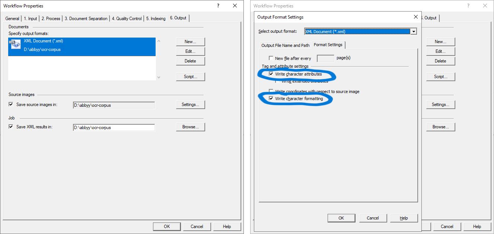

Visualize OCR Results
Upload one .pdf file and one Abbyy .xml file.
Instructions
To get XML data from an Abbyy workflow, add the “XML Document (*.xml)” in the “Output” tab. Then click “Edit” and select the “Write character attributes” and “Write character formatting” options.
